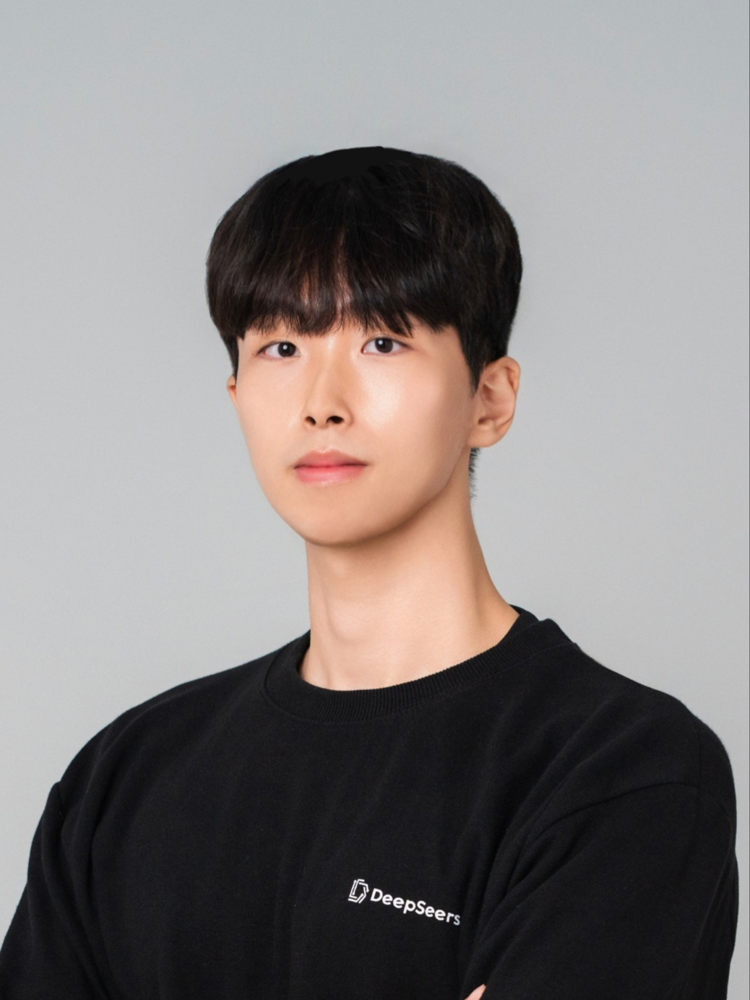

Experience

Applied Machine Learning Lab. Hansung University
Undergraduate Researcher
May 2024 – Jul 2025
딥러닝 기반 반도체 후공정 불량 감지 연구
- 기존 Rule-Based 머신 비전 시스템의 한계를 극복하기 위해, Object Detection 기반의 딥러닝 모델을 활용한 반도체 불량 감지 알고리즘을 연구하였습니다.
- Few-shot 환경에서 데이터가 부족한 반도체 도메인의 특성을 고려하여 다양한 이미지 Augmentation 기법을 적용하고, Pad, Package 등 큰 소자뿐만 아니라 Lead, Ball 등 작은 소자의 검출 성능 향상에 집중하였습니다.
- 불량 탐지 과정을 자동화함으로써 작업자의 티칭 부담을 줄이고, 작업 속도 및 정확도를 동시에 향상시키는 방안을 실험 및 분석하였습니다.
Transformer 기반 대화형 장비 인터페이스 연구
- Transformer 모델을 활용하여 사용자의 명령어와 의도를 이해하고, 장비 제어에 직접 활용할 수 있는 대화형 인터페이스 설계 방안을 연구하였습니다.
- 반도체 장비 사용자의 작업 맥락을 반영한 자연어 처리 기반 제어 시스템의 초기 프로토타입을 구현하고 테스트하였습니다.
- 기존 GUI 중심 장비 조작 방식의 한계를 보완하며, 향후 작업자 피로도 감소와 오류 방지에 기여할 수 있는 인터페이스 방향성을 제시하였습니다.
‘반도체 소자 생산을 위한 인공지능 기반 스마트 제조 공정 장비 및 관련 기술 개발’ 국책과제에 학부연구생으로 참여하며, 연구실의 AI 비전 기술을 실제 산업 현장에 적용하는 데 기여하였습니다.

DeepSeers
Computer Vision Software Engineer
May 2024 – Dec 2024
프로젝트 기반 실무 참여
- DeepSeers는 한성대학교 Applied Machine Learning Lab.에서 진행된 연구 프로젝트를 기반으로 설립된 스타트업으로, 반도체 후공정 장비에 탑재되는 AI 기반 비전 검사 소프트웨어를 개발하는 회사입니다.
- 반도체 후공정 장비 생산 업체인 제너셈의 Saw Singulation 및 Unloader 장비에 탑재되는 비전 검사 소프트웨어 개발 프로젝트에 참여하였습니다.
- 방학 중에는 주 5일 풀타임, 학기 중에는 주 2일 풀타임으로 근무하며 실무 개발 및 테스트 업무에 지속적으로 기여하였습니다.
머신비전 알고리즘 개발
- C#, WPF, Halcon을 활용하여 Saw Singulation 공정 중 발생하는 Chipping, Burr 등의 불량을 검출하는 머신비전 알고리즘을 설계하고 구현하였습니다.
- BGA, QFN, LGA 등 다양한 반도체 패키지에 대해 불량 검출 로직을 개발하였으며, 특히 Multi-Pad 구조의 LGA 패키지에서 구성 요소를 정확히 인식할 수 있는 알고리즘을 설계하였습니다.
- Pad-Pitch나 Offset 불량 검사를 위한 정밀 검사 알고리즘을 개발하고 성능 개선에 기여하였습니다.
그 외 티칭 및 calibration 인터페이스 등 검사 로직 외 소프트웨어 구성에도 직접 참여하였습니다.

Individual Photo at DeepSeers